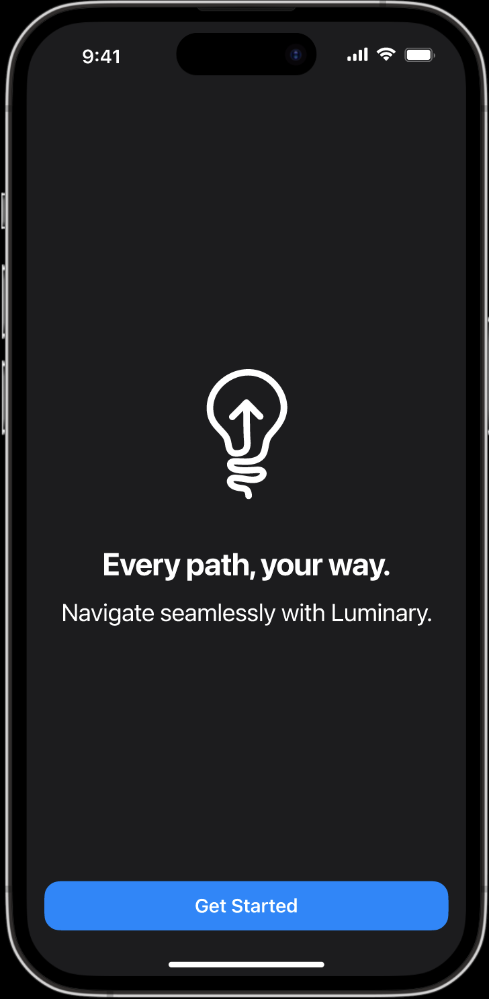
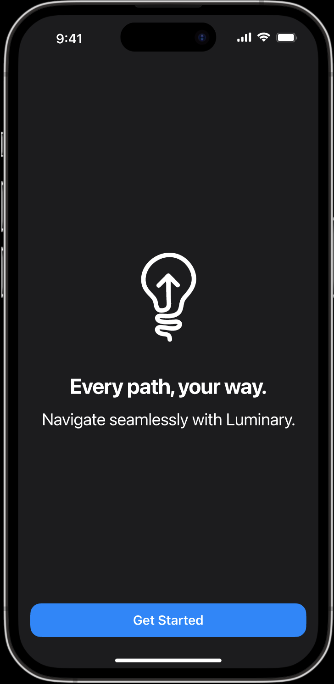
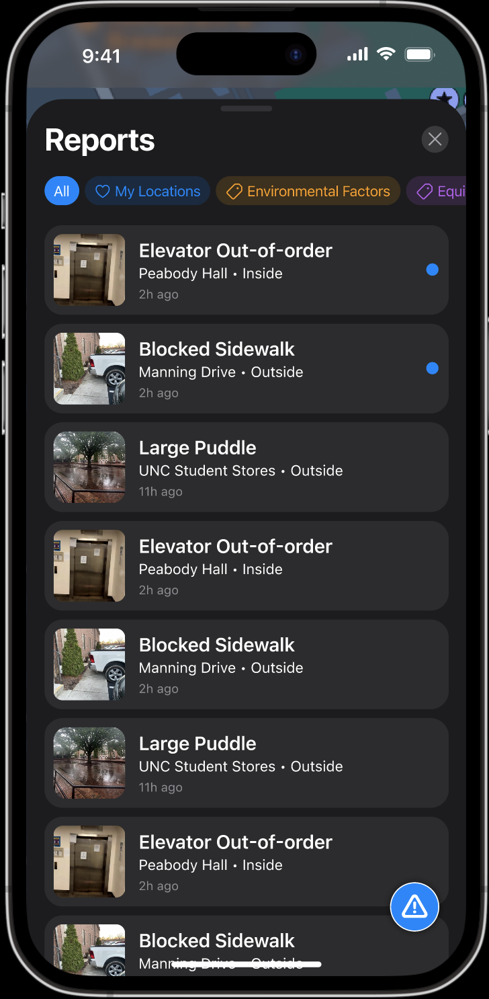
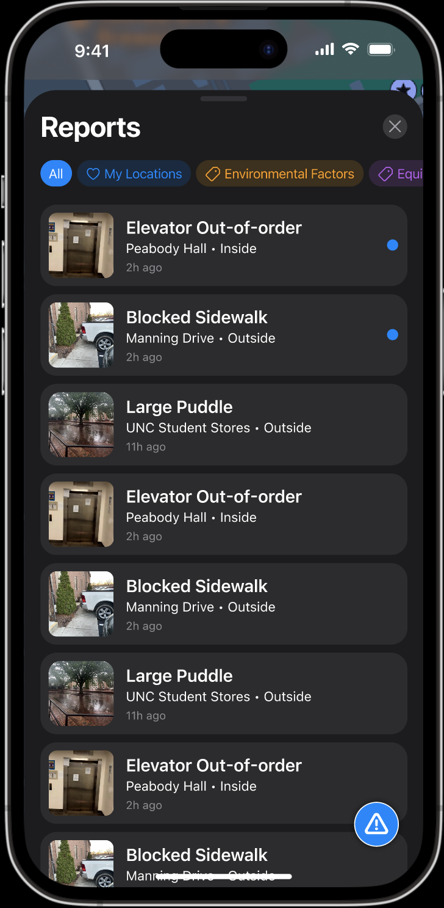
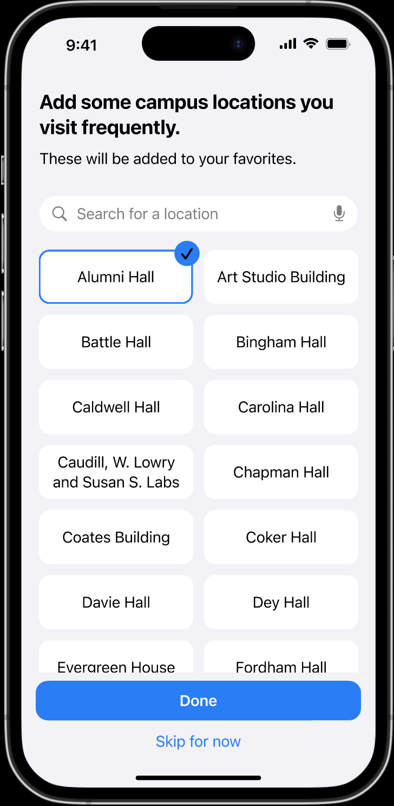
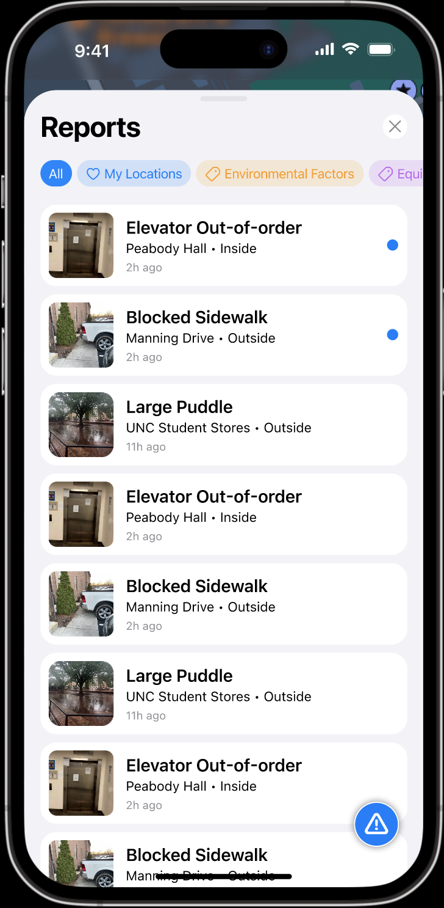
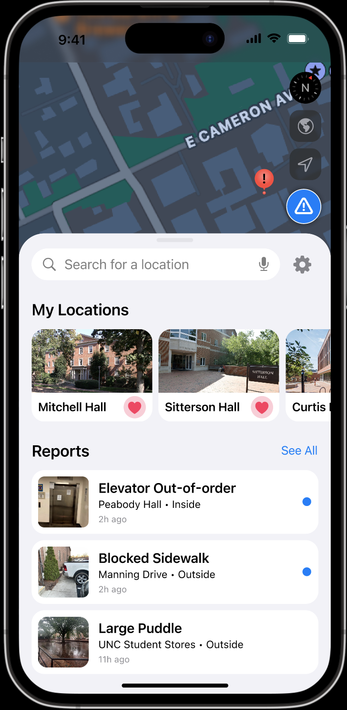
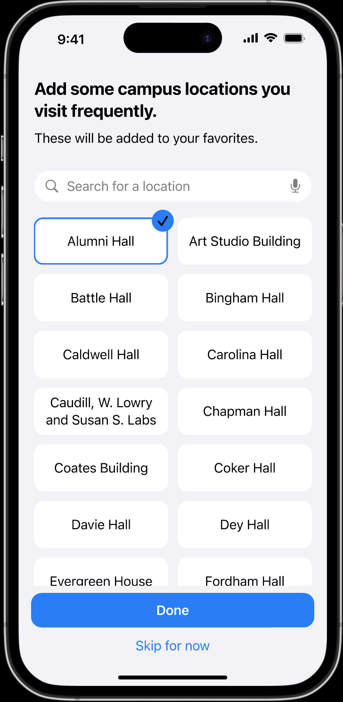
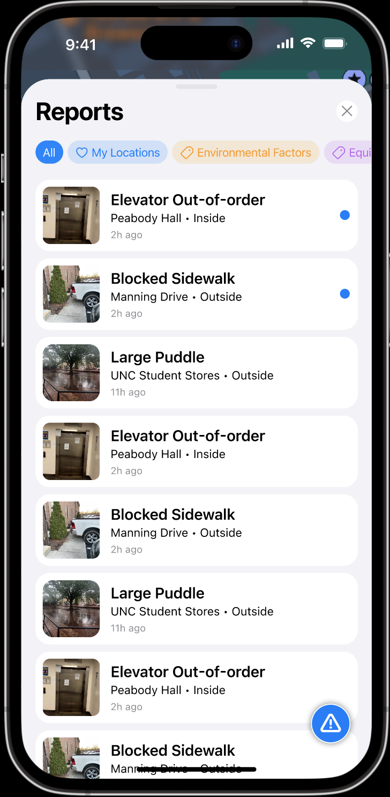
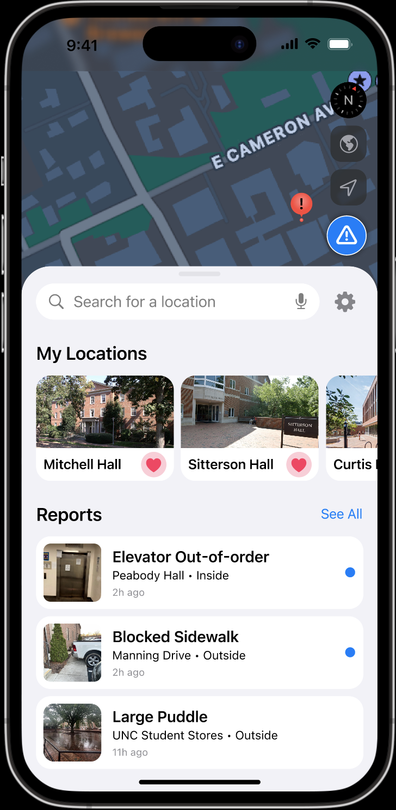

Luminary
Luminary is an accessibility-focused navigation app developed by App Team Carolina to help students at UNC Chapel Hill find safe and accessible routes across campus. The app allows users to plan their paths while avoiding obstacles such as construction zones or uneven terrain. It also includes a community-driven reporting feature, enabling users to share real-time updates about new barriers on common routes.
During usability testing, several users expressed a desire for a more comfortable viewing experience in different lighting conditions. In response, my role focused on designing a light mode interface that maintained visual clarity while preserving the app’s accessible color contrast standards. Through this project, I learned how thoughtful visual design choices can directly enhance inclusivity and usability for all users.

 

 


 




